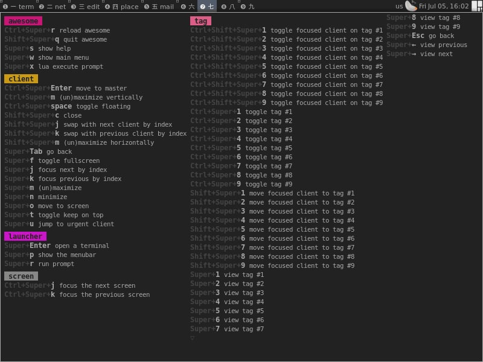

I had recently moved to awesomewm from i3wm, some default keybindings were different and It had a really cool command to access cheatsheet which looked like below

Then I got a linux phone where swaywm was highly popular in development, I couldn’t find anything good enough to create that cheatsheet like the one found in awesomewm. This script allows me to parse the swaywm config, and create a cheatsheet. It can later be made more pretty through https://carbon.now.sh/.
generate_keys_cheatsheet.py
# Will generate a keys.txt, go to https://carbon.now.sh and generate a carbon.png from keys.txt
import os
import sys
import re
import pandas as pd
from rich import print
from tabulate import tabulate
# FIXME: there must be a more pythonesque way to do this!
def get_category(conf, name):
for cat in conf:
if cat["category-name"] == name:
return cat
cat={ }
cat["category-name"] = name
cat["bindings"] = [ ]
conf.append(cat)
return cat
token_pattern = re.compile(r"^(\S+)\s+(.*)$")
def get_token(line):
line = line.strip()
m = token_pattern.match(line)
if m:
t1, t2 = m.group(1), m.group(2)
else:
t1 = t2 = ""
return t1, t2
def check_for(pattern, line, annotation):
if re.search(pattern, line, re.IGNORECASE):
print(annotation)
# parsing the sway config file:
def read_bindsym():
bindsym_dummy = "#bindsym-dummy"
conf=[ ]
with open(my_globals['config_file'], "r") as fp:
while True:
line = fp.readline()
if not line:
break
if my_globals['debug']:
sys.stderr.write(line)
orig_line = line.strip()
token, line = get_token(line)
if token == "####":
cat, desc = get_token(line)
if cat == "" or desc == "":
print(f"{my_globals['progName']}: can't recognise '{orig_line}'", file=sys.stderr)
sys.exit(1)
category = get_category(conf, cat)
# look for next bindsym or #bindsym-dummy line:
while True:
line = fp.readline()
if not line:
sys.stderr.write(f"{my_globals['progName']}: Unexpected EOF - missing 'bindsym' for '{orig_line}'\n")
sys.exit(1)
if my_globals['debug']:
sys.stderr.write(line)
token, line = get_token(line)
if token in ( "bindsym", "bindcode", bindsym_dummy):
break
if token == bindsym_dummy:
shortcut = ""
command = line
else:
# skip any --locked or other options:
shortcut = "--"
while shortcut[0:2] == "--":
shortcut, line = get_token(line)
command = line
item = { }
item["name"] = desc
item["shortcut"] = shortcut
item["command"] = command
if my_globals['debug']:
sys.stderr.write(str(item))
category["bindings"].append(item)
return conf
def print_annotated_config():
with open(my_globals['config_file'], "r") as fp:
while True:
line = fp.readline()
if not line:
break
check_for("bindsym .* exec \\$term", line," #### _Run Terminal")
check_for("bindsym .* kill$", line," #### _Window Kill")
check_for("bindsym .* exec \\$menu", line," #### _Run Program Launcher")
check_for("bindsym .* reload$", line," #### _Mode Reload sway")
check_for("bindsym .* exec swaynag .*exit shortcut", line," #### _Mode Exit sway")
check_for("bindsym .* focus left", line," #### _Window Focus left")
check_for("bindsym .* focus right", line," #### _Window Focus right")
check_for("bindsym .* focus up", line," #### _Window Focus up")
check_for("bindsym .* focus down", line," #### _Window Focus down")
check_for("bindsym .* move left$", line," #### _Window Move window left")
check_for("bindsym .* move right$", line," #### _Window Move window right")
check_for("bindsym .* move up$", line," #### _Window Move window up")
check_for("bindsym .* move down$", line," #### _Window Move window down")
check_for("bindsym .*[0-9] workspace number 1", line," #### W_orkspace Jump to w/s 1")
check_for("bindsym .*[0-9] workspace number 2", line," #### W_orkspace Jump to w/s 2")
check_for("bindsym .*[0-9] workspace number 3", line," #### W_orkspace Jump to w/s 3")
check_for("bindsym .*[0-9] workspace number 4", line," #### W_orkspace Jump to w/s 4")
check_for("bindsym .* to workspace number 1", line," #### _Window Move to w/s 1")
check_for("bindsym .* to workspace number 2", line," #### _Window Move to w/s 2")
check_for("bindsym .* to workspace number 3", line," #### _Window Move to w/s 3")
check_for("bindsym .* to workspace number 4", line," #### _Window Move to w/s 4")
check_for("bindsym .* splith$", line," #### _Window Horizontal split")
check_for("bindsym .* splitv$", line," #### _Window Vertical split")
check_for("bindsym .* layout stacking", line," #### W_orkspace Stacked layout")
check_for("bindsym .* layout tabbed", line," #### W_orkspace Tabbed layout")
check_for("bindsym .* layout toggle split", line," #### W_orkspace Toggle layout")
check_for("bindsym .* fullscreen$", line," #### _Window Fullscreen")
check_for("bindsym .* floating toggle", line," #### W_orkspace Toggle focus with floating")
check_for("bindsym .* focus mode_toggle", line," #### W_orkspace Swap focus with floating")
check_for("bindsym .* focus parent", line," #### _Window Focus parent")
check_for("bindsym .* move scratchpad", line," #### _Window Move to scratchpad")
check_for("bindsym .* scratchpad show", line," #### W_orkspace Show next scratchpad")
check_for("bindsym .* mode \"resize\"", line,"#### _Mode Resize Mode (Esc to exit)")
sys.stdout.write(line)
my_globals = { }
my_globals['focused'] = 0
my_globals['dirName'], my_globals['progName'] = os.path.split(sys.argv[0])
my_globals['debug'] = False
my_globals['notify'] = True
my_globals['lock'] = False
my_globals['config_file'] = os.getenv("HOME")+"/.config/sway/config"
config = read_bindsym()
f = open("keys.txt", "a")
# print(config)
for cat in config:
title = f"[bold red] {cat['category-name']} [/bold red]"
print(title)
cf = pd.DataFrame(cat['bindings'], columns=["name", "shortcut"])
table = tabulate(cf, headers='keys', tablefmt='psql')
# os.system(f"/home/alarm/Documents/herbe/herbe \"{title}\n{table}\"")
f.write(title+"\n")
f.write(table)
f.close()
In sway config add
# show cheatsheet
bindsym $mod+s exec feh -x --zoom fill --scale-down --auto-zoom --no-menus --on-last-slide quit --title "cheat" /home/alarm/.local/share/bin/carbon.png
# make cheatsheet window floating and centered
for_window [title="cheat"] floating enable, move position center